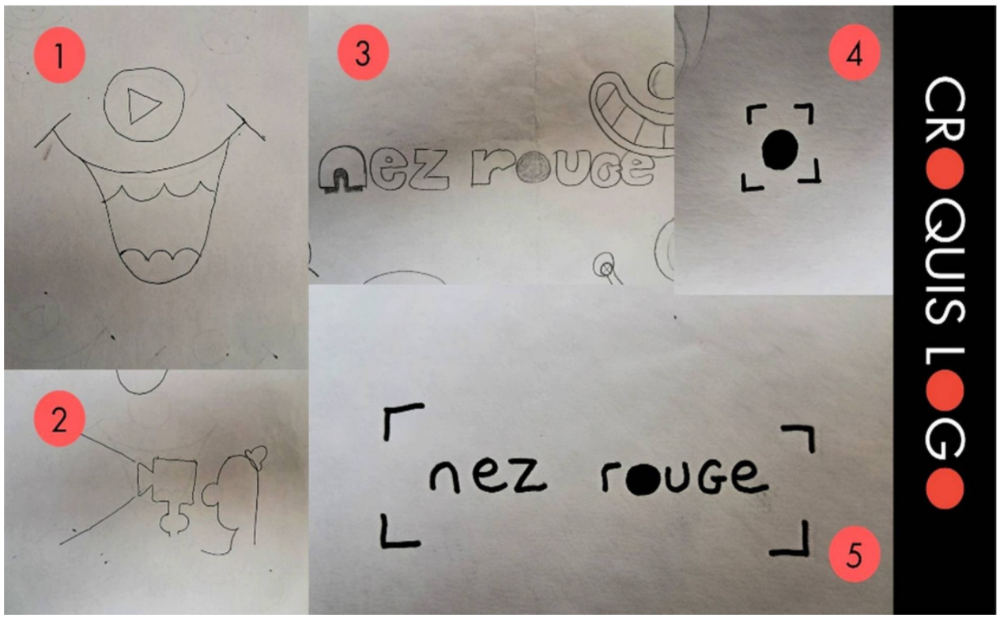
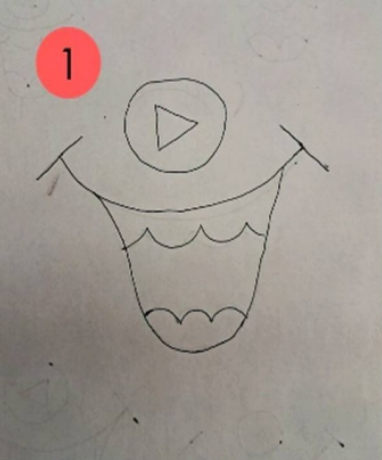
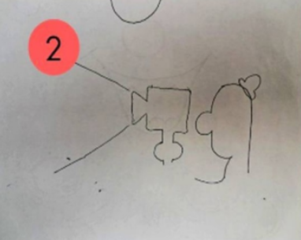
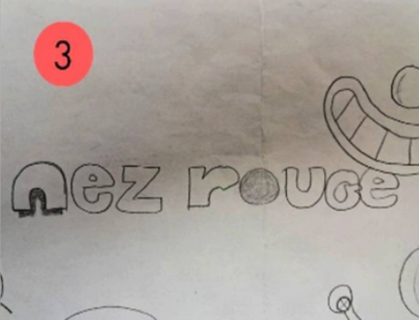
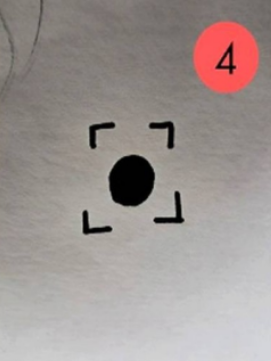
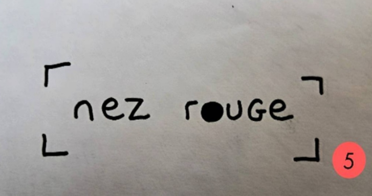
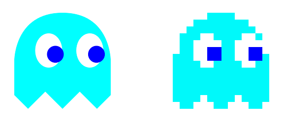
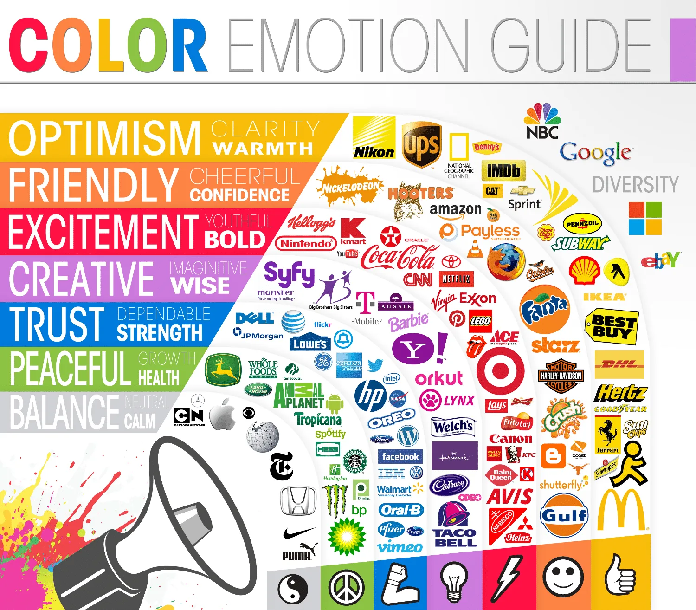

6 - Charte Graphique#
🏄 Avant de Commencer#
Aprés avoir expériementé rapidement avec le logiciel illustrator, il est temps désormais de se plonger dans la réalisation de votre charte graphique.
Informations
✍ - Vincent
🚧 - En cours
🔨 - 13/08/2025
🕑 - 20 - 30 min
Objectifs Pédagogiques
Sommaire
🌐 Internet
🕸️ World Wibe Web
💻 Site Web
🛒 E-Commerce
💑 Le Consommateur
Activité A
Activité A
Liens : 🎓 Illustrations, Graphismes, Visuels 🎓 Interfaces & Prototypages 🎓 Supports de Communications
Syllabus
Module 7: Charte graphique
Objectif global:
L’objectif global est que l’apprenant comprenne et maîtrise la mise en place d’un système de veille de la concurrence.
Plan de cours:
I. Maîtrisez les enjeux d’une charte graphique
Découverte de l’utilité d’une charte graphique
La prise en compte des utilisateurs finaux
Le format du livrable
II. Créez une charte graphique
L’univers de la marque
Construction du logo
Les polices de caractères
Les couleurs de la charte
L’implémentation d’éléments complémentaires à la charte
Définir les bonnes pratiques et les interdits
Livrables:
Réaliser la charte graphique de son projet (logo, logotype…)
Support de Cours
🧠 La Théorie#
Le Graphisme#
L’art et la technique de créer des visuels pour communiquer un message
Graphisme Print
Graphisme Digital
Vous devez savoir faire les deux !!
💥 Graphisme Print vs Graphisme Digital
Critères |
Graphisme Print |
Graphisme Digital |
|---|---|---|
🎯 Objectif principal |
Transmettre un message sur un support physique (affiche, brochure, magazine, packaging). |
Créer une expérience visuelle interactive sur un support numérique (site web, application, interface). |
🖨️ Support de diffusion |
Papier, carton, affichage, packaging, signalétique. |
Écrans : ordinateur, mobile, tablette, TV connectée, montre, etc. |
🎨 Résolution & format |
Résolution fixe (généralement 300 dpi). |
Résolution variable (72 à 144 ppi). |
🧭 Espace et composition |
Mise en page statique et figée. |
Mise en page dynamique et interactive. |
🌈 Couleurs |
Système CMJN (Cyan, Magenta, Jaune, Noir) pour l’impression. |
Système RVB (Rouge, Vert, Bleu) pour les écrans. |
✍️ Typographie |
Lisibilité sur papier, impression fine. |
Lisibilité à l’écran, dépend des résolutions et des tailles d’écran. |
🧩 Contraintes techniques |
Marges d’impression, fond perdu, calibrage colorimétrique. |
Temps de chargement, responsive design, accessibilité, compatibilité navigateur. |
🧠 Expérience utilisateur (UX) |
Lecture passive, message reçu d’un seul coup d’œil. |
Interaction active, navigation, animation, transitions. |
⚙️ Outils principaux |
Adobe InDesign, Illustrator, Photoshop. |
Figma, Adobe XD, Sketch, Canva, Webflow. |
♻️ Durée de vie |
Durable mais coûteux à modifier une fois imprimé. |
Flexible, mise à jour facile, ajustable en temps réel. |
🌍 Accessibilité et durabilité |
Dépend de la qualité d’impression et de la distribution. |
Doit respecter les normes d’accessibilité (WCAG) et s’adapter à tous les écrans. |
💡 Finalité |
Objet tangible, matérialisé. |
Expérience interactive, fluide, évolutive. |
💡 Le graphisme digital conserve les fondements du graphisme print (équilibre, lisibilité, harmonie), mais il les transpose dans un univers interactif où l’utilisateur devient acteur. C’est dans ce contexte que la charte graphique devient essentielle pour assurer la cohérence visuelle de l’expérience sur tous les supports. Avant de nous lancer à corps perdu dans la création de notre charte graphique, intéressons-nous à la notion d’identité visuelle.
Identité Visuelle#
L’ensemble des éléments graphiques qui représentent visuellement une marque ou un projet
Identité de Marque#
Avant de devenir visible, une marque doit être lisible
Une identité de marque solide définit qui l’on est, à qui l’on s’adresse et quelle promesse on porte. C’est elle qui donne du sens à chaque choix graphique : couleurs, ton, iconographie, parcours utilisateur… Sans cette base stratégique, l’identité visuelle n’est qu’un joli décor. Avec elle, chaque élément devient un message clair et cohérent, capable de créer la confiance, de se différencier et de transformer un simple visiteur en client fidèle.
Identité de Marque
Prérequis
Avant de se plonger dans l’identité visuelle de son projet, il est très important d’avoir bien définit l’identité de sa marque. C’est un peu hors programme (plus niveau Master), mais pour ceux qui le souhaite, je vous invite à cliquer sur la carte ci dessus (Identité de Marque), qui vous emmenera vers une page dédié. Je vous invite à faire l’Activité A qui est un audit de votre identité de marque avant de passer à la suite
Le/La Graphiste#
Il ou elle donne vie à l’expérience digitale en transformant des idées en images claires et attractives.
Dans l’e-commerce, le graphiste est un véritable artiste de la conversion : il capte l’intention du client, interprète son univers et le transforme en une expérience visuelle irrésistible. Son regard créatif met en scène les produits, guide le parcours d’achat et rend chaque interaction à la fois intuitive et désirable. Grâce à lui, l’émotion devient un déclencheur de vente.
Fiche métier
Sa Mission#
Identité de Marque
Identité Visuelle
Ses Outils#
La Suite Adobe
Illustrator
Photoshop
Premiere Pro
After Effects
InDesign
Utilisations et Alternatives Gratuites !
P Explication
Utilisations principales
Création de logos
Illustrations
Affiches, flyers, brochures
Typographie et lettrage
Graphisme web & mobile
Schémas, infographies, pictogrammes
Export optimisé pour impression ou écran
Alternatives :

{kind=link}
{kind=link}
{kind=link}
{kind=link}
{kind=link}
Besoin |
Recommandation |
|---|---|
Logos / graphisme pro |
✅ Inkscape |
Illustration artistique |
✅ Krita |
Design rapide et simple |
✅ Vectr |
Icônes pour le web |
✅ Boxy SVG |
P Explication
Utilisations principales
Retouche et montage photo (corrections, effets, colorimétrie…)
Photomanipulation / compositions créatives
Dessin et peinture numérique
Création de visuels web (bannières, miniatures, réseaux sociaux)
Maquettage UI/UX (moins fréquent aujourd’hui)
Traitement d’images haute résolution pour impression
Alternatives :
GIMP – La meilleure alternative libre
Krita – Pour l’illustration et le digital painting
Darktable – Pour les photographes (développement RAW)
RawTherapee – Retouche photo professionnelle RAW
Besoin |
Recommandation |
|---|---|
Retouche photo générale / graphisme |
✅ GIMP |
Dessin & peinture numérique |
✅ Krita |
Développement RAW (photographie pro) |
✅ Darktable ou RawTherapee |
Créations simples, apprentissage |
✅ GIMP puis Krita si besoin |
P Explication
Utilisations principales
Retouche et montage photo (corrections, effets, colorimétrie…)
Photomanipulation / compositions créatives
Dessin et peinture numérique
Création de visuels web (bannières, miniatures, réseaux sociaux)
Maquettage UI/UX (moins fréquent aujourd’hui)
Traitement d’images haute résolution pour impression
Documentation
[Anglais mais complet](https://docs.kdenlive.org/en/cutting_and_assembling/editing.html]
Alternatives :
Kdenlive
Shotcut
DaVinci Resolve
Blender
Besoin |
Recommandation |
|---|---|
Remplacement direct de Premiere |
✅ Kdenlive |
Simplicité + efficacité |
✅ Shotcut |
Color grading cinéma / pro |
✅ DaVinci Resolve |
3D + montage vidéo |
✅ Blender |
Ordinateur peu puissant |
✅ Shotcut ou Kdenlive |
P Explication
Utilisations principales
Retouche et montage photo (corrections, effets, colorimétrie…)
Photomanipulation / compositions créatives
Dessin et peinture numérique
Création de visuels web (bannières, miniatures, réseaux sociaux)
Maquettage UI/UX (moins fréquent aujourd’hui)
Traitement d’images haute résolution pour impression
Documentation
[Anglais mais complet](https://docs.kdenlive.org/en/cutting_and_assembling/editing.html]
Alternatives :
Kdenlive
Shotcut
DaVinci Resolve
Blender
Besoin |
Recommandation |
|---|---|
Remplacement direct de Premiere |
✅ Kdenlive |
Simplicité + efficacité |
✅ Shotcut |
Color grading cinéma / pro |
✅ DaVinci Resolve |
3D + montage vidéo |
✅ Blender |
Ordinateur peu puissant |
✅ Shotcut ou Kdenlive |
Note
Créer une activité drag and drop pour associer les différents livrables aux diférents outils et introduire le vocabulaire technique (mockup, fichiers impressions etc)
Charte Graphique#
L’outil qui formalise et organise les éléments graphiques pour qu’ils soient cohérents et reproductibles sur tous les supports
Elle se compose des éléments suivants :
Moodboard#
Un Tableau d’Inspiration Visuelle
Il réunit toutes les références nécessaires pour définir l’ambiance d’un projet : couleurs, typographies, textures, styles photos, icônes, univers artistique…
👉Objectif : Traduire une intention créative en images avant de se lancer dans la production graphique.
Exemples#
Moodboards-CDP1 par VdeguinLeurs Processus de Réflexion
Tout en conservant cet état d’esprit et cette sensibilité artistique qui m’animent, je me suis lancé dans une quête d’inspiration pour enrichir et affiner mon projet “Nez Rouge”. Pour ce faire, j’ai exploré diverses sources en ligne, notamment Google, ainsi que des plateformes de réseaux sociaux telles qu’Instagram et Pinterest. Ces outils se sont révélés être des mines d’or pour découvrir des visuels et des idées en parfaite adéquation avec l’univers du cirque vintage.
Google a été ma première étape pour effectuer des recherches approfondies. En utilisant des mots-clés précis comme “affiche de cirque vintage”, “spectacle de monstres des années 1920” ou encore “esthétique rétro du cirque”, j’ai pu accéder à une multitude de résultats pertinents. Les images et les articles trouvés m’ont permis de mieux comprendre les codes visuels et les éléments graphiques qui caractérisent cet univers. Les affiches minimalistes, avec leurs typographies élégantes et leurs illustrations épurées, m’ont particulièrement inspiré pour la création du logo et des supports visuels du projet.
Instagram, avec sa communauté créative et passionnée, a été une autre source précieuse d’inspiration. En suivant des comptes dédiés à l’histoire du cirque, aux spectacles vintage et à la photographie rétro, j’ai pu découvrir des clichés authentiques et des mises en scène captivantes. Les photos de spectacles de “monstres” des années passées, avec leurs costumes extravagants et leurs décors surannés, m’ont offert une plongée immersive dans l’atmosphère unique de ces représentations. Ces visuels m’ont aidé à affiner la palette de couleurs et les textures que j’ai utilisées dans mes créations.
Pinterest, quant à lui, m’a permis de centraliser et d’organiser toutes mes trouvailles. J’ai créé des tableaux thématiques où j’ai épinglé des affiches, des illustrations, des typographies et des photographies qui correspondaient à l’esthétique recherchée. Cette plateforme m’a offert une vue d’ensemble de mes inspirations, facilitant ainsi la synthèse et l’intégration de ces éléments dans mon projet. Les épingles de Pinterest m’ont également permis de découvrir des artistes contemporains qui revisitent l’univers du cirque vintage, apportant une touche de modernité à des thèmes intemporels.
Au terme de ces recherches, je peux affirmer que mes investigations ont été particulièrement fructueuses. De l’affiche de cirque minimaliste à la photo vintage de spectacle de “monstres”, chaque découverte a enrichi ma compréhension et ma sensibilité artistique. Ces inspirations m’ont permis de créer des visuels cohérents et évocateurs, fidèles à l’esprit du cirque vintage tout en apportant une touche personnelle et contemporaine. Grâce à ces ressources, j’ai pu donner vie à un projet qui, je l’espère, saura captiver et émerveiller son public.
Pour la création de mon logo, j’ai commencé par constituer un moodboard, un outil essentiel pour organiser et visualiser mes inspirations. Grâce à mes recherches approfondies sur Pinterest, Google et Instagram, j’ai rassemblé une multitude d’images, de typographies et d’éléments graphiques qui résonnaient avec l’univers du cirque vintage et l’identité que je souhaitais donner à “Nez Rouge”. Ce moodboard m’a servi de guide tout au long du processus créatif, m’aidant à affiner mes idées et à trouver l’équilibre parfait entre tradition et modernité.
L’un des premiers aspects que je voulais intégrer dans mon logo était une référence visuelle à la vidéo. Étant donné que la vidéo est un élément central de mon projet, il était crucial que le logo évoque cet aspect dès le premier coup d’œil. J’ai donc décidé d’incorporer un élément inspiré du bouton “Rec” (enregistrement) des caméras vidéo. Ce petit cercle rouge, universellement reconnu, est un symbole fort qui rappelle immédiatement l’univers de la vidéo. En l’intégrant subtilement dans le design du logo, j’ai pu créer un lien visuel direct avec cet aspect essentiel du projet.
Ensuite, il était essentiel que le logo rappelle l’univers du cirque et, plus spécifiquement, le personnage emblématique du clown. Le nez rouge, symbole par excellence du clown, devait être présent dans le logo pour ancrer immédiatement l’identité visuelle dans cet univers. J’ai donc réfléchi à la manière d’intégrer cet élément de manière élégante et reconnaissable. Le nez rouge, avec sa forme ronde et ses couleurs vives, est devenu un élément central du design, apportant une touche de fantaisie et de nostalgie.
Le moodboard met en avant les années 70 avec des éléments culturels et iconiques de cette époque, marquée par des couleurs vives et audacieuses, couramment utilisées pour exprimer la liberté, l’individualité et un rejet des conventions strictes de la société. C’est la prise de conscience de la gravité des problèmes écologiques, un retour aux racines et à la nature, ainsi qu’une recherche d’originalité et de modernité dans un contexte de consommation de masse. Des œuvres de Seund Ja Rhee, artiste sud coréenne, qui pour fuir son pays en guerre a migré en France dans les années 50, à Paris et qui dans les années 70 explore la construction et déconstruction de la forme yin et yang qui m’a inspiré pour mon logo.
Il en ressort un univers visuel qui sert le propos du site et la démarche artistique.
Logo#
Signe graphique destiné à identifier une entreprise, un produit ou une marque et à en assurer la reconnaissance
Logo-présentations par Vdeguin
Un Bon Logo#
Doit être ...
Un bon logo doit être clair, lisible et facile à reconnaître.
Marche à suivre :
Utiliser des formes simples et peu d’éléments
Éviter les détails inutiles
Privilégier une typographie lisible
Vérifier qu’il reste compréhensible à petite taille
Le logo doit être facilement mémorisable au premier coup d’œil.
Marche à suivre :
Concevoir une forme ou une idée graphique forte
Travailler une silhouette reconnaissable
Tester auprès de plusieurs personnes : peuvent-ils le décrire après 5 secondes ?
Le style du logo doit refléter l’identité de la marque (son secteur, ses valeurs, son ton).
Marche à suivre :
Définir la personnalité de la marque (moderne ? luxueuse ? amusante ?)
Étudier les logos du secteur pour se positionner
Choisir des couleurs et typographies en cohérence avec les messages à transmettre
Note
image logo airbnb
Le logo doit fonctionner partout : imprimé, digital, devanture, réseaux sociaux…
Marche à suivre :
Tester le logo en petit, en grand, en couleur, en noir & blanc
Prévoir différentes versions (horizontale, verticale, pictogramme seul)
Exporter dans plusieurs formats (vectoriel indispensable : .SVG/.AI/.EPS)
Un bon logo doit durer dans le temps sans suivre de mode trop éphémère.
Marche à suivre :
Éviter les tendances graphiques trop datées
Miser sur des choix durables plutôt que sur ce qui est “à la mode”
S’assurer que le logo sera toujours pertinent dans 5, 10 ou 20 ans
Le logo doit se démarquer des concurrents et être identifiable.
Marche à suivre :
Faire une recherche approfondie sur les logos existants dans le secteur
Jouer sur l’idée créative plutôt que sur la complexité visuelle
Vérifier la disponibilité légale (droits d’auteur / marque déposée)
Et pour ça, il faut passer par un ...
Processus de Réflexion#
La créativité donne la forme,
la réflexion donne le sens
✍ Documentez vos tentatives !
Blabla, penser à écrire le cheminement dans le dossier projet
Exemple#
{kind=link}

Tentative de logo de Soula lien vers son projet#
Le Processus de Réflexion de Soula
{kind=link}

Dès le départ, mon intention était de créer un logo qui soit avant tout graphique plutôt que textuel. Je voulais qu’il évoque immédiatement l’humour et l’univers audiovisuel, deux éléments centraux du projet “Nez Rouge”. L’objectif était de capter l’attention dès le premier regard et de transmettre une impression de légèreté et de divertissement.
Pour atteindre cet objectif, j’ai opté pour un design qui combine plusieurs éléments visuels forts. J’ai choisi de mettre en avant un large sourire cartoonesque, avec ses lignes exagérées et ses courbes dynamiques, pour évoquer l’humour et la bonne humeur. J’ai également intégré un nez de clown, symbole emblématique du cirque et de la comédie, placé au centre du logo.
Pour renforcer la dimension audiovisuelle, j’ai ajouté un symbole de lecture vidéo en plein milieu du nez de clown. Ce petit triangle, universellement reconnu, rappelle immédiatement le monde de la vidéo et du cinéma. En combinant ces trois éléments – le sourire, le nez de clown et le symbole de lecture – j’ai créé un logo qui fusionne l’humour et l’audiovisuel de manière harmonieuse et visuellement attrayante.
Cependant, malgré la richesse de ces éléments visuels, j’ai rapidement constaté un problème de clarté. Le logo, bien que graphiquement intéressant, ne parvenait pas à évoquer immédiatement le nom “Nez Rouge”. Les visiteurs pouvaient être séduits par le design, mais ils ne faisaient pas nécessairement le lien avec l’identité du projet. Cette confusion pouvait nuire à la reconnaissance et à la mémorisation du logo.
Pour remédier à ce problème, il était essentiel de rendre le logo plus explicite. J’ai donc entrepris de réviser le design pour intégrer des éléments qui évoquent plus directement le nom “Nez Rouge”. Cela pouvait passer par l’ajout de texte, la modification des proportions ou l’ajout de détails supplémentaires pour renforcer la clarté du message. L’objectif était de conserver l’esprit ludique et audiovisuel du logo tout en le rendant limpide.
{kind=link}

Pour ma seconde piste, j’ai opté pour une approche bien plus abstraite. L’idée était de créer un logo qui ne se contente pas de représenter visuellement le projet, mais qui raconte également une histoire et transmet une vision artistique unique.
J’ai choisi de mettre en scène la silhouette d’un clown se servant d’une caméra pour filmer une scène. Ce concept de “clown réalisateur” est né de mon désir de retranscrire l’essence même de “Nez Rouge”. Je voulais que “Nez Rouge” soit perçu comme une agence dirigée par un clown cinéaste, un personnage à la fois ludique et professionnel, capable de capturer des moments magiques et de les transformer en œuvres visuelles captivantes.
Ce choix n’est pas anodin. Le clown, avec son nez rouge emblématique, représente l’humour, la fantaisie et la capacité à apporter de la joie. La caméra, quant à elle, symbolise le monde de l’audiovisuel, la créativité et la technique. En combinant ces deux éléments, j’ai voulu créer une métaphore visuelle puissante : un clown qui, derrière la caméra, devient le maître d’œuvre de spectacles visuels uniques. Cette image évoque à la fois le divertissement et l’expertise, deux valeurs fondamentales de “Nez Rouge”.
Cependant, malgré la richesse de cette métaphore, j’ai rapidement constaté que ce logo souffrait du même problème que la piste précédente : il n’évoquait pas immédiatement le nom “Nez Rouge”. Bien que l’image du clown réalisateur soit intrigante et artistiquement intéressante, elle ne permettait pas aux observateurs de faire le lien direct avec l’identité du projet. Cette abstraction, bien que poétique, pouvait prêter à confusion et nuire à la reconnaissance immédiate du logo.
Pour remédier à ce problème, il est devenu évident que le logo devait inclure une composante textuelle. Le nom “Nez Rouge” devait être intégré de manière claire et lisible, afin que le logo soit immédiatement reconnaissable. Cette intégration textuelle permettrait de conserver l’esprit créatif et ludique du concept tout en assurant que le message principal est bien transmis.
{kind=link}

Pour ma troisième piste, j’ai décidé d’adopter une approche plus directe. Après avoir expérimenté des concepts visuels abstraits et symboliques, il est apparu clairement que la clarté et la lisibilité étaient essentielles pour que le logo soit immédiatement reconnaissable. J’ai donc choisi de mettre en avant le nom de mon agence, “Nez Rouge”, de manière explicite.
Pour ce troisième essai, j’ai opté pour une écriture cartoonesque, rappelant l’univers de Tex Avery. Ce style, avec ses lettres dynamiques et ses courbes exagérées, apporte une touche de fantaisie et d’humour, en parfaite adéquation avec l’esprit ludique et créatif de “Nez Rouge”. En choisissant cette typographie, je voulais capturer l’énergie et la joie de vivre des dessins animés classiques, tout en restant fidèle à l’identité du projet.
Un élément clé de ce design est la mise en avant du “O” de “Nez Rouge” en rouge. Ce choix chromatique n’est pas anodin : le rouge est une couleur vive et attrayante qui capte immédiatement l’attention. En colorant le “O” en rouge, j’ai voulu créer un point focal dans le logo, rappelant subtilement le nez rouge emblématique du clown. Cette touche de couleur ajoute une dimension visuelle intéressante tout en renforçant la mémorabilité du logo.
Cependant, après avoir finalisé ce design, une nouvelle difficulté est apparue : le logo me semblait trop excentrique. Bien que l’écriture cartoonesque et le “O” rouge soient visuellement attrayants, ils pouvaient donner une impression de décalage par rapport à ma cible. Mon objectif était de créer un logo qui soit à la fois créatif et professionnel, capable de séduire une clientèle variée, y compris des entreprises et des institutions.
Il est devenu évident que le logo devait être moins décalé et plus sobre pour être en adéquation avec ma cible. Un design trop excentrique pouvait limiter l’attrait du logo auprès de clients potentiels qui recherchent une approche plus professionnelle et sérieuse. Il était donc crucial de trouver un équilibre entre créativité et sobriété, afin de créer un logo qui soit à la fois unique et adapté à un large public.
{kind=link}

Après avoir exploré des approches plus directes et explicites, j’ai décidé de revenir en arrière et de réévaluer une approche abstraite pour le logo de “Nez Rouge”. L’idée était de créer un design minimaliste et visuellement impactant, capable de captiver l’attention tout en laissant une part de mystère et d’interprétation.
Pour cette nouvelle tentative, j’ai opté pour une approche extrêmement simplifiée. Le logo se compose d’un simple rond rouge, suivi d’un vecteur représentant une caméra. Ce choix graphique vise à évoquer les éléments fondamentaux du projet : le nez rouge emblématique du clown et l’univers audiovisuel. Le rond rouge, par sa simplicité et sa couleur vive, capte immédiatement l’attention et rappelle subtilement le nez du clown. Le vecteur caméra, quant à lui, symbolise l’aspect créatif et technique du projet, lié à la production vidéo.
Cependant, malgré la simplicité et l’élégance de ce design, un problème persiste : ce logo n’évoque pas immédiatement le nom “Nez Rouge”. Le rond rouge et le vecteur caméra, bien que visuellement attrayants, ne permettent pas aux observateurs de faire le lien direct avec l’identité du projet. Cette abstraction, bien que poétique et esthétique, peut prêter à confusion et nuire à la reconnaissance immédiate du logo.
{kind=link}

Après plusieurs itérations et ajustements, j’ai finalement trouvé la combinaison parfaite pour le logo de “Nez Rouge”. Cette dernière piste représente la synthèse de mes précédentes explorations, intégrant les éléments les plus réussis de chacune pour créer un design cohérent et efficace.
Pour cette ultime tentative, j’ai décidé de fusionner les concepts des pistes 3 et 4. La piste 4, avec son rond rouge et son vecteur caméra, apportait une simplicité et une élégance visuelles indéniables. Cependant, elle manquait de clarté quant à l’identité de “Nez Rouge”. La piste 3, quant à elle, mettait l’accent sur une approche plus directe, avec le nom de l’agence écrit de manière explicite, mais elle pouvait sembler trop excentrique.
Pour créer le logo final, j’ai donc combiné ces deux approches. J’ai conservé le rond rouge et le vecteur caméra de la piste 4, mais je les ai intégrés de manière plus subtile dans le design. Le rond rouge est devenu un élément central, rappelant immédiatement le nez du clown, tandis que le vecteur caméra est placé de manière à évoquer l’univers audiovisuel sans dominer le logo.
En parallèle, j’ai repris l’idée de la piste 3 en écrivant le nom “Nez Rouge” de manière directe, mais cette fois-ci avec une typographie plus professionnelle. J’ai opté pour une police de caractères élégante et lisible, qui conserve une touche de fantaisie tout en étant suffisamment sobre pour être prise au sérieux. Cette typographie permet de transmettre à la fois la créativité et le professionnalisme de l’agence.
En somme, cette dernière piste représente la synthèse parfaite de mes précédentes explorations. En combinant les éléments visuels forts du rond rouge et du vecteur caméra avec une typographie professionnelle, j’ai créé un logo qui est à la fois mémorable, reconnaissable et adapté à ma cible. Ce logo final incarne parfaitement l’identité de “Nez Rouge”, alliant créativité, humour et professionnalisme.
Note
choisir la couleur de son logo: https://www.codeur.com/blog/choisir-couleur-logo/
Mauvais Logo#
Note
Intégrer pres canva
Outils et Bonnes Pratiques#
Introduction Dessin vectorielle et Illustrator
Illustrator
💥 Image Vectoriel vs Image Matricielle
Il existe deux grandes familles d’images : les images matricielles et les images vectorielles. Comparons-les !
Image Vectorielle
Image Matricielle
{kind=link}

{kind=link}
{kind=link}
Note
Peut être inclure dans une fiche récap
Zone de sécurité#
Déclinaisons#
Interdits du Logo#
Export#
Note
Export svg
garder plusieurs versions
…
Lien vers format réseau sociaux en bas pour expliquer qu’il faut un export par plateforme
En Plus#
Palette de Couleurs#
Phrase d'Intro
Note
S’appuyer sur la ressource suivante : Lien
Parler de la Théorie et mettre le chapitre psychologie dans un dropdown
Psychologie des couleurs#
{kind=link}

Note
Les couleurs ont une signification
lien activité porait chinois
Associations de Couleurs#
Les systèmes d’associations proposés par la roue chromatique reposent sur la manière dont l’œil humain perçoit les couleurs et leurs relations spatiales sur le cercle. Certaines combinaisons créent du contraste, d’autres de la douceur — mais toutes sont conçues pour être visuellement équilibrées.
Hex : #ff0000
HSL : hsl(0, 100%, 50%)
Les Différentes associations de couleurs
Couleurs analogues
Définition : Trois couleurs (parfois plus) côte à côte sur la roue chromatique. Ex. : bleu — bleu-vert — vert.
Pourquoi c’est harmonieux : Les couleurs étant proches en teinte, elles partagent une portion importante de leurs longueurs d’onde.
👉 Résultat : effet doux, naturel, cohérent, très utilisé en design et en nature (couchers de soleil, feuillages).
Complémentaires
Définition : Deux couleurs opposées sur la roue. Ex. : bleu / orange, rouge / vert.
Pourquoi c’est harmonieux : Elles créent le plus fort contraste tout en restant équilibrées, car leurs longueurs d’onde se complètent visuellement.
👉 Résultat : palette dynamique, idéale pour attirer l’attention.
Complémentaires divisées
Définition : Une couleur + les deux couleurs adjacentes à sa complémentaire. Ex. : bleu avec jaune-orangé et rouge-orangé.
Pourquoi c’est harmonieux : Vous obtenez un contraste intéressant (comme les complémentaires), mais moins agressif, car la complémentaire directe est “ouverte” en deux teintes voisines.
👉 Résultat : équilibre entre tension et douceur.
Double complémentaires divisées
Définition : Deux paires de split complementaries. En d’autres termes, deux couleurs et leurs deux complémentaires adjacentes. Ex : bleu + vert, associés à leurs split complements respectifs.
Pourquoi c’est harmonieux : Cela crée un système complexe mais très équilibré :
contraste → grâce aux complémentaires
douceur → grâce aux splits
👉 Résultat : palette riche et vibrante, utile pour des compositions colorées sans être chaotiques.
Schéma en rectangle / quadrichromie complémentaire
Définition : Quatre couleurs formant deux paires complémentaires, disposées en rectangle sur la roue.
Pourquoi c’est harmonieux : L’équilibre vient du fait qu’il y a deux contrastes forts mais répartis de manière stable.
👉 Résultat : variété + contraste, tout en gardant une structure solide.
Tétradique / double complémentaire
Définition : Quatre couleurs formant un carré parfait sur la roue chromatique. Les teintes sont à égale distance les unes des autres.
Pourquoi c’est harmonieux : L’espacement régulier crée un équilibre mathématique entre contraste et variété.
👉 Résultat : palette très complète, avec une grande amplitude visuelle.
Triade
Définition : Trois couleurs espacées de manière égale (triangle équilatéral). Ex. : rouge / jaune / bleu.
Pourquoi c’est harmonieux : Les teintes sont suffisamment éloignées pour créer du contraste, mais équilibrées grâce à la symétrie.
👉 Résultat : palette vive, stable et dynamique.
Outils de sélection#
Note
Ajouter adobe color etc …
Outils de Tests#
Note
Outils pour tester ta palette de couleurs sur un site factice ? a tester
Besoin d’inspi ?#
Dribble
Note
Mettre ici les différentes sources d’inspiration (lien vers le chapitre veille - veille inspirationnel, veille créative).
Contrastes#
Note
Un jeux pour tester la visibilité de différentes nuances de couleurs
On se fait un petit jeu ?
Selectionne le block qui a une couleur différente.
Typographies#
Et non typologie !
Handwritten#
Explorez#
Note
Méthode pédagogique
des apprenants en groupe explorent des polices et font une restitution sur ce qu’ils ont aimé ou non.
Iconographie#
Phrase d'Intro
Note
Utiliser le document suivant Icons - quick start
pictogrammes de réassurance#
Note
Paramètres importants
cohérence
lien avec charte graphique
Bibliothèque#
Bonnes pratiques
Choisissez une bibliothèque et prenez toute vos icones dedans afin de maximiser la consistence
Outils IA#
Synthèse#
Exemple avec la charte olympique
Cours Ines#
Identité visuelle et sociologie
Atelier pratique#
Portrait Chinois#
Choisir:
Animal
Couleur
Objet
Saison
Musique
Emotion
Paysage
Plat
Superpouvoir
Note
L’exercice doit être focalisé sur la marque (et non sur la personnalité de l’individue)
Exercice hyper intéréssant. Voir plus-tard comment cela se traduit dans la charte graphique
Autres Outils#
UI KIT#
Note
Intégrer une image et petite description dans chaque
Images#
Type de contenu |
Dimensions (pixels) |
Notes |
|---|---|---|
Photo de profil |
320 × 320 |
— |
Paysage (photo horizontale) |
1080 × 566 |
— |
Portrait (photo verticale) |
1080 × 1350 |
— |
Carré (photo carrée) |
1080 × 1080 |
Le maximum autorisé est de 2080 × 2080 |
Stories |
1080 × 1920 |
— |
Reel |
1080 × 1920 |
— |
Type de contenu |
Dimensions (pixels) |
Taille maximale / Notes |
|---|---|---|
Photo de profil |
400 × 400 |
— |
Image d’en-tête |
1500 × 500 |
Taille max du fichier : 5 MB |
Image dans un post |
1024 × 512 |
— |
Tweet avec image et lien |
600 × 335 |
— |
Twitter Cards (dimension standard) |
800 × 418 ou 800 × 800 |
Taille max du fichier : 3 MB |
Summary Card avec image |
280 × 150 |
Taille max du fichier : 1 MB |
Image In-stream |
Minimum 440 × 220 |
Taille max du fichier : 5 MB |
GIF |
— |
Seuls les formats JPG ou PNG sont autorisés |
Formats pris en charge |
— |
.GIF, .JPG, .PNG |
Type de contenu |
Dimensions (pixels) |
Notes |
|---|---|---|
Photo de profil |
170 × 170 |
— |
Photo de couverture (navigateur) |
820 × 312 |
— |
Messenger |
254 × 133 |
— |
Couverture vidéo |
1250 × 630 |
— |
Publication vidéo |
1080 × 1080 |
— |
Publication carrée |
1200 × 630 |
— |
Photo avec lien |
1200 × 630 |
— |
Photo de couverture d’évènement |
1200 × 628 |
— |
Panorama |
600 × 600 |
— |
Photo en 360° |
6000 × 3000 |
— |
Reels Facebook |
Jusqu’à 60 s, 1080p, format 9:16, MP4 |
— |
Stories Facebook |
1080 × 1920 |
— |
Publicités :
Type de contenu |
Dimensions (pixels) |
Notes |
|---|---|---|
Image sur la timeline |
1600 × 628 |
— |
Vidéo |
600 × 315 ou 600 × 600 (carré) |
— |
Carrousel |
1080 × 1080 |
— |
Réseau d’audience (Audience Network) |
398 × 208 |
— |
Marketplace |
1200 × 1200 |
— |
Photo colonne de droite |
1200 × 628 |
— |
Photo d’article instantané |
1200 × 628 |
— |
Photo d’annonce Marketplace |
1200 × 628 |
— |
Application mobile
Type de contenu |
Dimensions (pixels) |
Notes |
|---|---|---|
Photo de couverture |
640 × 360 |
— |
Photo de profil |
128 × 128 |
— |
Type de contenu |
Dimensions (pixels) |
Notes |
|---|---|---|
Photo de profil |
400 × 400 |
Taille max du fichier : 8 MB |
Image d’en-tête |
1584 × 396 |
Taille max du fichier : 4 MB |
Image pour publication |
520 × 320 |
— |
Image pour article lié (avec lien) |
520 × 272 |
— |
Pages de l’entreprise
Type de contenu |
Dimensions (pixels) |
Notes |
|---|---|---|
Image de couverture de l’entreprise |
1584 × 396 |
— |
Logo de l’entreprise |
300 × 300 |
— |
Image principale pour une section |
1128 × 376 |
— |
Photos de l’entreprise dans la section Vie |
900 × 600 |
— |
Image pour section Vie dans modules personnalisés |
502 × 282 |
— |
Tailles des annonces (publicités) LinkedIn
Type de contenu |
Dimensions / Ratio |
Notes |
|---|---|---|
Annonce avec une seule image |
1,91:1 (paysage), 1:1 (carré), 1:1,91 (portrait mobile uniquement) |
JPG ou PNG, 5 MB |
Annonce vidéo |
Horizontal : 16:9, Carré : 1:1, Vertical : 9:16 |
MP4 ; format sonore : AAC ou MPEG4 ; Fréquence recommandée : 30 fps |
Annonce carrousel |
1080 × 1080 |
JPG ou PNG ; Ratio : 1:1 |
Annonce d’événement |
4:1 |
Image extraite de la page de l’événement |
Type de contenu |
Dimensions (pixels) |
Notes |
|---|---|---|
Image du profil |
180 × 180 |
Format JPG ou PNG |
Image de couverture |
800 × 450 |
— |
Épingle (Pin) |
1000 × 1500 |
Rapport hauteur/largeur : 2:3 |
Couverture de tableau |
200 × 150 |
Idéalement |
Vignette de couverture de tableau |
100 × 100 |
— |
Épingle de story |
1080 × 1920 |
— |
Épingles promues |
1000 × 1500 |
Rapport hauteur/largeur : 2:3 à 1:3,5 |
Type de contenu |
Dimensions (pixels) |
Notes |
|---|---|---|
Photo de profil |
800 × 800 |
Taille maximale : 4 Mo ; Formats : JPG, BMP, PNG |
Photo de couverture de la chaîne |
2048 × 1152 |
Rapport hauteur/largeur : 16:9 |
Miniature de vidéo |
1280 × 720 |
HD |
Résolutions vidéo
Résolution |
Dimensions (pixels) |
|---|---|
4320p (8K) |
7680 × 4320 |
2160p (4K) |
3840 × 2160 |
1440p (2K) |
2560 × 1440 |
1080p (HD) |
1920 × 1080 |
720p (HD) |
1280 × 720 |
480p (SD) |
854 × 480 |
360p (SD) |
640 × 360 |
240p (SD) |
426 × 240 |
Design System#
Note
Très bonne ressource a explorer - récupérer les images.
💪 Mise En Pratique#
Note
Exercice pour refaire la DA de Label Ecole
Brief#
Note
Utiliser le site ci-dessus pour générer un brief client pour différentes applications
Très intéréssant ! A tester
Note
Autre site, tester les deux et voir la différence (un produit des briefs plus complet ?)
Créer ta police#
Note
S’inspirer du tuto suivant pour proposer aux apprenants la création de leur propre police (niveau élevé)
📈 Pour Finir#
Conclusion#
Note
Conclusion plus fiche résumé (production collaborative ? Framanote ?) - produire un pdf exportable
Test#
Tes Connaissances#
Note
Créer un grand Storyline pour ajouter un questionnaire a chaque cours, enregistre la progression de l’apprenant et offre une collection de badge !!
Ton Projet#
Dossier Projet
Livrable 1
Présentation Canva
Livrable 1
Sources#
Vocabulaire
Note
termes du glossaire
Liste Figures
Note
Référencer les figures de la page ?
Plus de Ressources#
Note
Un site qui met en lumière les copies dans les pubs. La personne réalise également une analyse des intentions derrière la pub
Note
Utiliser pour une activité ? ou utiliser comme exemples ?
Bien car liens vers pages guidelines
Note
Un très bon outil, a tester !!
Bibliothèques d’images#
Synthèse#
Exemples de bonnes charte graphique#
LifterLMS#
Note
créer une carte avec le logo pour emmener vers la charte graphique et expliquer brièvement la société. Mettre un dropdown en bas qui explique pourquoi c’est une bonne charte graphique
En Plus#
Veille Créative#
Commentaires#
Note
Lien vers formulaire de feedback + possibilité de donner son avis dans les commentaires.